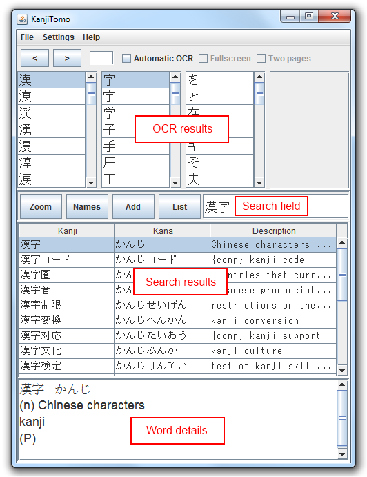
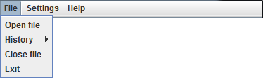
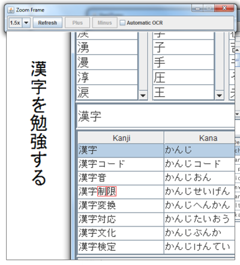
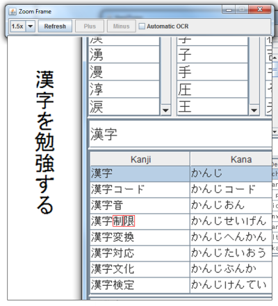
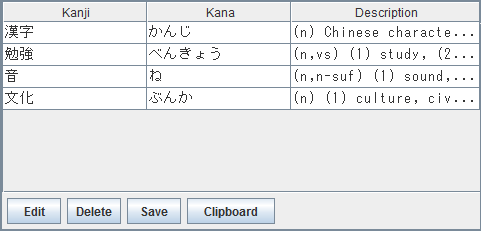

Instructions
|
When you first start KanjiTomo, no file has been opened and the program is in Automatic OCR mode. This means that you can point the cursor anywhere on the screen and the program tries to identify the image under cursor as Japanese text. This is useful if you are using web browser or other program to display images. If you have static images on your computer, it's best to open them directly with KanjiTomo from the file menu. If the image has large characters or complex background (for example in title page), it might be necessary to manually mark the text. This can be done by click and drag with left mouse button over image (file mode) or zoom frame. When the program identifies characters, they are marked by red squares. OCR Results panel now shows a list of matching characters for each character image. If the correct character is not at top of the list, you can select it manually. If too many characters are selected, click the selected row to clear it. You can also use hotkeys Alt+W and Alt+Q to add or remove characters from selection. Selected characters are show in Search field. You can also input characters here yourself. All words starting with inputted characters are shown; add space to also search for ending words. Search results panel shows all words in a dictionary that contain the text in search field. Click a word to show a detailed description in Word details. Hotkey Alt+Z can be used to copy the result to clipboard. The dictionary used is Jim Breen's EDICT. Terms used in descriptions are explained in EDICT documentation. Hotkeys can be used to control the program, see below for examples. Hotkeys must first be enabled by setting ENABLE_HOTKEYS=1 in config.txt file. |
 |
Control panel
- Left and right buttons
Opens next/previous page. Arrow keys or mouse wheel can also be used.
Japanese reading direction is assumed; left arrow will open the next page.
JPEG, PNG and other common image formats are supported. - Page number
Click to enter a new page number.
Page numbers can be used if there are multiple image files in a directory with numbers in filenames. - Automatic OCR
If enabled, OCR is run by pointing mouse cursor.
If disabled, OCR is run after left click (a file must be open). Also prevents the program from staying on top of other windows. Hotkey: Alt+X - Fullscreen
If enabled, opened image is shown in full screen. Image position can be changed from Settings -> Image position menu. Fullscreen mode has a black background by default. You can add image to the background by putting a single image file to wallpaper folder. Space key hides the interface and Esc exits the fullscreen mode. - Two pages
If enabled, two images from consecutive pages are shown side-by-side. It is assumed that page numbers (determined by file name) start from one; if this is not the case, Settings -> Switch phase can be used to display two-page spreads correctly.
File menu
- Open file
Opens an image file. JPEG, PNG and other common image formats are supported. - History
Shows a history of opened files. Only the most recently opened file in each directory is added to history. Number of files saved to history can be set with FILE_HISTORY_SIZE parameter in config.txt file. - Close file
Closes the image currently displayed. - Exit
Exits the program.
Settings menu

- Text orientation
Is the text vertical or horizontal?
If Automatic is selected, orientation is detected by the program.
Hotkey: Alt+A - Text color
Is the text black on white or white on black? Other colors might also work if there's enough contrast.
If Automatic is selected, color is detected by the program.
Hotkey: Alt+S - Image position
Is the image displayed on left or right? Only enabled when a file is opened.
Hotkey: Drag program window to left or right edge of the screen. - Switch phase
It is assumed that page numbers (determined by file name) start from one; if this is not the case, this setting can be used to display two-page spreads correctly. - Import settings
If you are upgrading from previous version of KanjiTomo, you can use this option to load your settings from old config.txt file.
Zoom frame
Zoom frame can be used to mark characters for OCR with click and drag. You can move the frame by dragging from title bar or with middle mouse button; red rectangle show the zoom target location. Zoom can be targeted to specific location by clicking the middle button over image (file mode) or with Alt+R. Middle button also closes the zoom frame.
- Zoom amount
1.0x is no zoom. In file mode, this means that the original image resolution is used. - Refresh
Can be used to refresh the frame contents if image under frame has changed. - Plus / Minus
Adds or removes one character from selected area. - Automatic OCR
Characters are detected by pointing mouse cursor.
 

Names dictionary
In addition to EDICT, KanjiTomo also includes ENAMDICT, a dictionary for Japanese Proper Names by Jim Breen. This dictionary can be accessed from Names button or by the hotkey alt+D.
List of saved words

You can save identified words to a list and later export them to file or clipboard. After a word has been selected, click Add button to add the word to the list. A dialog is shown where you can edit the details of the saved word. Hotkey Alt+1 or double-click in results list also opens the Add word dialog.
- List
View added words and show other buttons - Edit
Modify selected word - Delete
Remove all selected words - Save
Write the word list to a file (dialog is shown where you can select file location) - Clipboard
Copy the word list to clipboard. Note that automatic OCR might be disabled after Clipboard button is pressed.
If Japanese characters are not displayed correctly after opening the saved file, make sure that your text editor supports UTF-8 encoding. If you are using Windows 7 operating system, try to open the file with Notepad instead of WordPad.